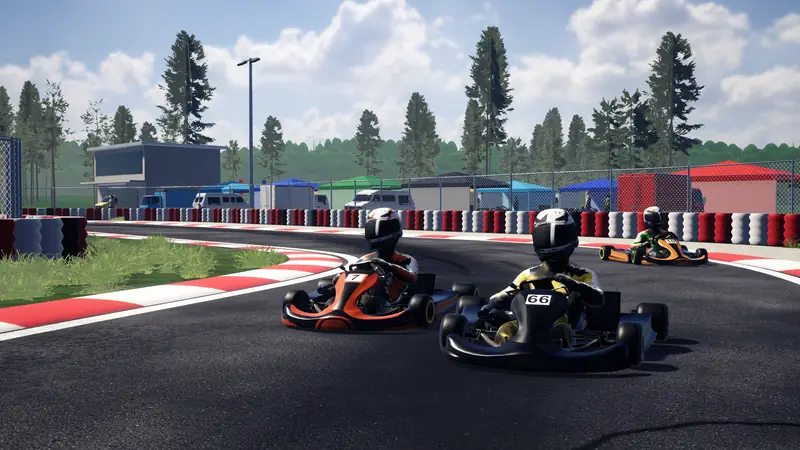
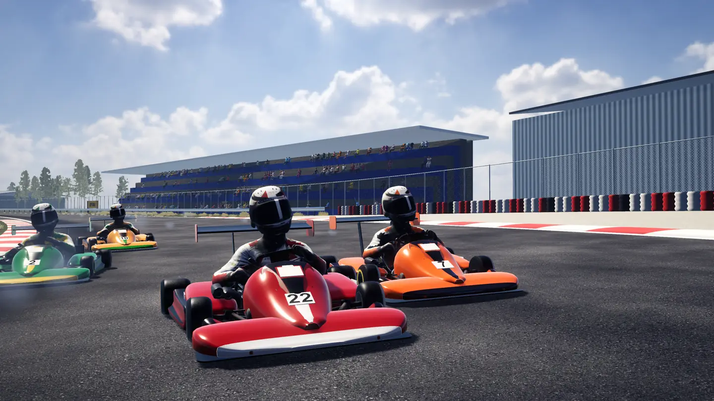
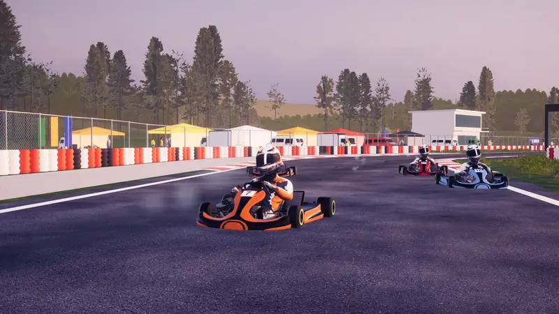

Nivel 1/6Alquiler 4T
VORTEX R-390
Pesado, noble y con neumáticos duros. Las noches de karts de alquiler son donde empieza todo.
- Motor4 tiempos
- Potencia11 hp
- CambioTransmisión directa

Empieza en un kart de alquiler y sube por las categorías reales del karting hasta el Superkart de 250 cc. Física real, parrillas de 20 karts y carreras con lluvia, en iPhone, iPad y Mac.

 PróximamenteApp Store · iPhone y iPadPróximamenteMac App StorePróximamenteGoogle Play
PróximamenteApp Store · iPhone y iPadPróximamenteMac App StorePróximamenteGoogle PlayAhora mismo en revisión de Apple: muy pronto en iPhone, iPad y Mac.
Gratis en iPhone, iPad y Mac. Android, próximamente.
Sujeta el móvil en horizontal con las dos manos y gíralo. En modo VOLANTE vas sentado en el kart: el horizonte se queda recto, el volante gira en tus manos y cada piano lo notas en la vibración.
Vista desde el asiento y el móvil como volante, con los pedales de gas y freno bajo los pulgares.
¿Prefieres lo clásico? Cambia a joystick en pantalla o a inclinación en Ajustes.
Conecta un mando por Bluetooth (PlayStation, Xbox y MFi). En el Mac, conduce con el teclado o con mando, con vibración.
La carrera deportiva sigue las categorías reales del karting. Siempre sales desde el fondo de la parrilla: gana una medalla y se abre la siguiente prueba; gánala en la Final y subes de categoría.

Nivel 1/6Pesado, noble y con neumáticos duros. Las noches de karts de alquiler son donde empieza todo.
 Nivel 2/6
Nivel 2/6Ligero y vivo: tu primer campeonato con licencia, contra pilotos que no regalan nada.
 Nivel 3/6
Nivel 3/6125 cc sin marchas y con embrague centrífugo. Aquí empiezan a mirarte los equipos.
 Nivel 4/6
Nivel 4/6Más potencia, mismos reflejos. Los mejores pilotos del país en el campeonato nacional.

Nivel 5/6Caja secuencial de seis marchas, frenos delanteros y la élite internacional. La categoría reina del kart.
 Nivel 6/6
Nivel 6/6Carenado completo y más de 200 km/h en circuitos de verdad. Lo más rápido que se puede correr sentado a ras de suelo.
Pulsa ONLINE y corre contra otros pilotos en la misma pista. Los conectados compiten entre sí y la IA ocupa los huecos, así que la carrera siempre sale con 20 karts, aunque estés tú solo.
 Cometa 7
Sol 19
Cometa 7
Sol 19
Un toque: entras en una sala abierta, en una carrera ya empezada o creas una nueva.
Elige categoría y circuito. La sala espera 60 segundos a que entre gente, o pulsa EMPEZAR YA.
Coges el kart de la última IA con sus vueltas, mientras el líder no haya pasado la mitad.
Cada humano es un kart de verdad en la pista: defiende, roza ruedas y pelea cada curva.
Elige un alias de la lista y a correr. Gratis, sin registro y con estadísticas online: carreras, victorias y podios.
Un servidor en Europa para todos: móviles, tablets y Macs corren en las mismas salas.
Real Karting usa su propia física de vehículo, escrita desde cero para karts, con ayudas ajustables para que aprendas primero y luego las quites.
 Lluvia
LluviaEl agarre desaparece, los pianos son hielo y el spray tapa al kart de delante. Al menos una carrera en mojado en cada categoría, con gotas en el visor.
Modelo de neumáticos con deslizamiento, transferencia de pesos, rebufo y pianos, simulado 500 veces por segundo. Cada categoría tiene su peso, potencia y agarre.

Sal desde el fondo y ábrete paso entre 19 rivales (12 karts en Superkart).

La IA sigue la trazada ideal de cada circuito, defiende, busca el hueco y falla bajo presión.

Mañanas, mediodías, tardes doradas y atardeceres, con cielos reales en cada circuito.
Siente los pianos, la hierba, los derrapes, los baches y cada toque.
Colores, dorsal, acabados de pintura, neón y humo de colores, todo ganado con medallas. Sin cajas de botín.
Pistas de alquiler reviradas, kartódromos entre pinos, junto al mar y en la ladera de una montaña, y cuatro grandes circuitos para el Superkart. La mayoría también se corren en sentido inverso.
El Parque y La Marina para las noches de alquiler; Los Pinos, Del Puerto, La Vega, Polígono Norte y La Cumbre para los campeonatos.
Circuito del Valle, Circuito de la Costa, Sierra Alta y La Fundición: rectas largas y curvas rápidas a más de 200 km/h.
Sí. Real Karting se descarga y se juega gratis, sin anuncios, sin cajas de botín y sin nada que comprar para ganar: todos corren con el mismo kart y gana el mejor piloto.
En iPhone, iPad y Mac (versión nativa para macOS). La versión para Android llegará pronto.
Sí. Pulsa ONLINE para una partida rápida, crea tu sala o entra en una carrera ya empezada, con pilotos reales y la IA llenando la parrilla. Es gratis y no necesita cuenta. La carrera deportiva sigue funcionando sin conexión.
Sujeta el móvil en horizontal con las dos manos y gíralo como un volante. Los pedales de gas y freno quedan bajo los pulgares y el modo VOLANTE te da la vista desde el asiento con el horizonte recto. En Ajustes puedes cambiar a joystick o a inclinación.
Sí. Puedes conectar un mando por Bluetooth (PlayStation, Xbox y MFi) en iPhone, iPad y Mac. En el Mac también puedes conducir con el teclado.
Para la carrera deportiva, no: funciona totalmente sin conexión y sin cuenta, y tu progreso se guarda en tu dispositivo. Solo el modo online, opcional, necesita conexión.
Es un simcade: la física del vehículo es real (neumáticos, transferencia de pesos, rebufo, un reglaje distinto para cada categoría), pero las ayudas permiten disfrutarlo desde la primera vuelta. Quítalas y conduce como un profesional.
Seis categorías reales: Alquiler 4T, Cadete 60 cc, Junior 125, Sénior 125, KZ con caja de seis marchas y el Superkart de 250 cc en grandes circuitos.
En español, inglés, francés, alemán, portugués e italiano.
No. El juego no tiene analítica, anuncios ni seguimiento, y no recoge datos personales. Consulta la política de privacidad.
Descarga Real Karting y convierte tu móvil en un volante.
PróximamenteApp Store · iPhone y iPadPróximamenteMac App StorePróximamenteGoogle PlayAhora mismo en revisión de Apple: muy pronto en iPhone, iPad y Mac.
Gratis en iPhone, iPad y Mac. Android, próximamente.
¿Has encontrado un fallo, tienes una idea o algo no funciona? Escríbenos y te responderemos.
Indícanos tu dispositivo y la versión del juego (aparece abajo a la derecha en el menú principal). Consejo: si va lento, elige una calidad más baja en AJUSTES > GRÁFICOS; si te sales mucho de la pista, sube las ayudas.
Escríbenos